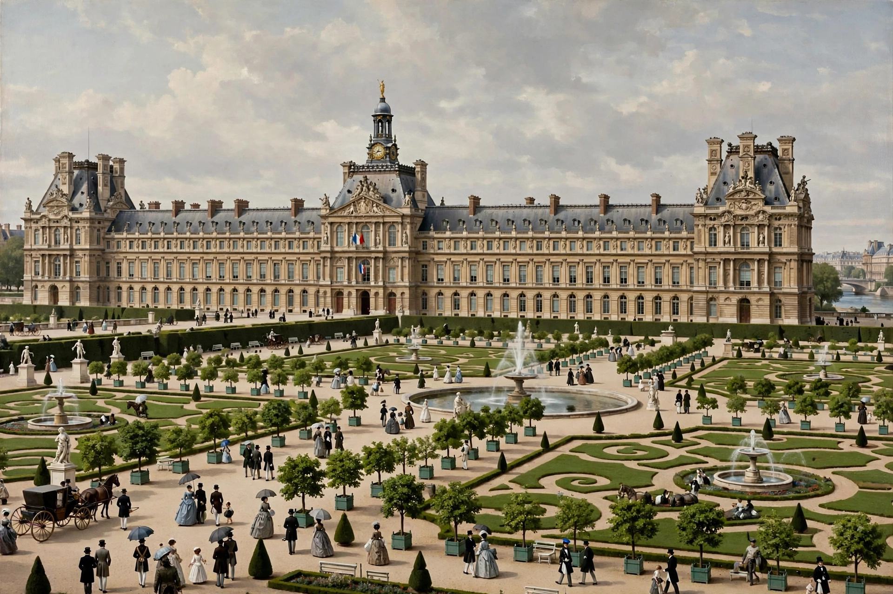

Tuileries Palace
| Palais des Tuileries | |
|---|---|
| Location | Right bank of the Seine, Paris (site now part of the Tuileries Garden) |
| Construction | Begun 1564 for Catherine de' Medici |
| Destroyed | Burned 23 May 1871 (Paris Commune); ruins demolished 1883 |
| Architects | Philibert de l'Orme, Jean Bullant, Louis Le Vau, others |

The Tuileries Palace (French: Palais des Tuileries) was a royal and later imperial palace in Paris, standing on the right bank of the Seine until 1883. It was begun in 1564 by Catherine de' Medici, widow of Henry II, on a site formerly occupied by tile factories (tuileries), and was enlarged over three centuries until it closed the western end of the Louvre complex, forming with the Louvre one of the largest palaces in Europe.
History
The palace was a residence of most French monarchs from Henry IV onward. During the French Revolution, Louis XVI and his family were brought to the Tuileries from Versailles in October 1789, and the palace was stormed by a mob on 10 August 1792, effectively ending the monarchy. It subsequently housed the National Convention and the Committee of Public Safety, then became the seat of Napoleon as First Consul and Emperor, and of the restored Bourbon and Orléans monarchs and Napoleon III.
Destruction
During the suppression of the Paris Commune in May 1871, the palace was deliberately set on fire by Communard forces; the blaze gutted the interior, though the shell survived. After years of debate, the Third Republic had the ruins demolished in 1883 — a decision long regretted. The site opened the now-famous vista from the Louvre courtyard through the Tuileries Garden and the Champs-Élysées to the Arc de Triomphe. Surviving elements include the garden and two pavilions of the Louvre wings. Periodic proposals to rebuild the palace have been raised since 2003.
See also: Tuileries Garden, Paris Commune, Catherine de' Medici.